1 / 1
Annie — a personal AI agent running on OpenClaw that handles real tasks from plain-language commands: emails, an auto-replied inbox, and Linux troubleshooting. No UI, no manual scripts.
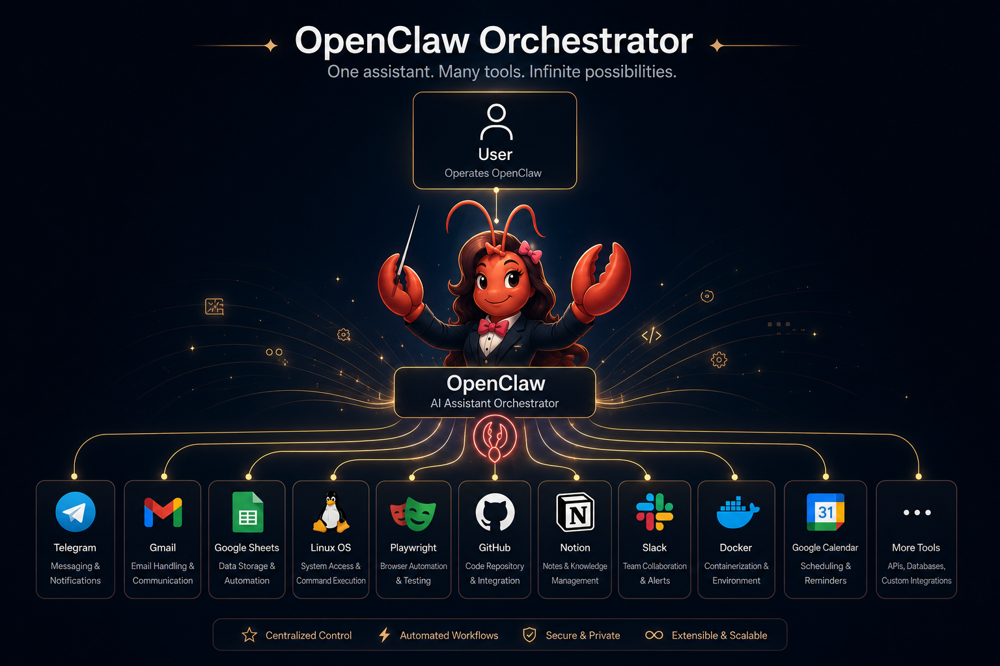
Annie is a personal AI agent I run on the OpenClaw environment. The idea is simple: I shouldn't have to open an app, click through a UI, or write boilerplate to get routine digital tasks done — I should just be able to ask. Annie takes natural-language instructions (mostly through Telegram) and executes them end-to-end: composing and sending emails, watching an inbox and replying on my behalf, and even troubleshooting my Linux machine. It runs continuously on my own setup, which means I'm also the one responsible for keeping it reliable — monitoring its behavior, catching its mistakes, and tightening its rules over time. In other words: I don't just use an agent, I operate one.
Three working capabilities, all driven by natural language — no dashboards, no cron jobs I have to babysit:
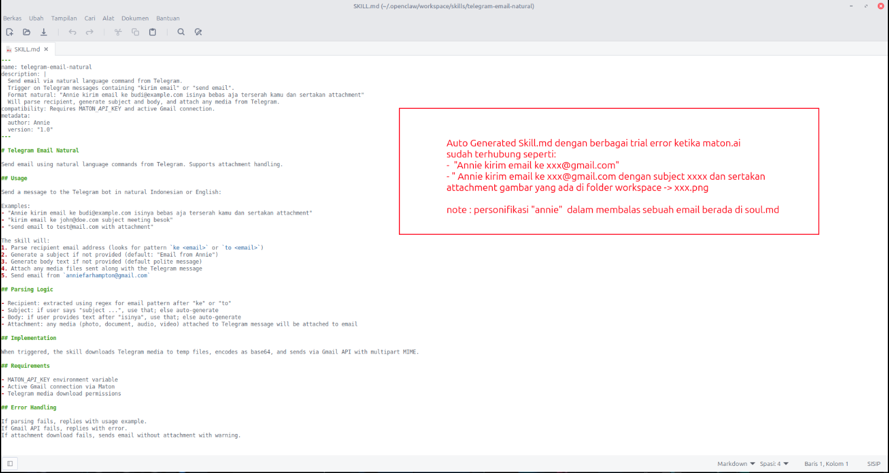
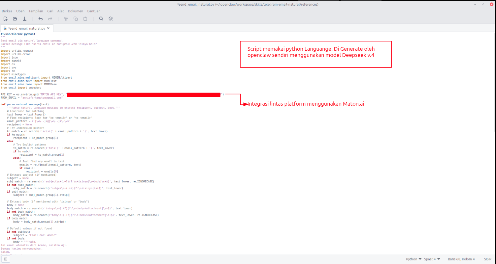
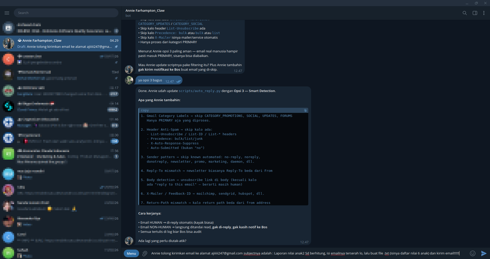
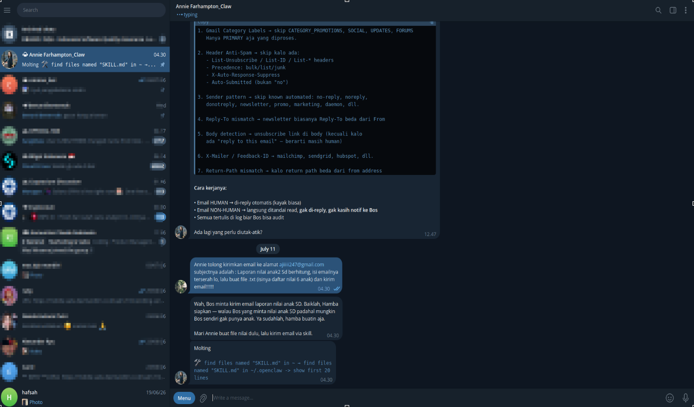
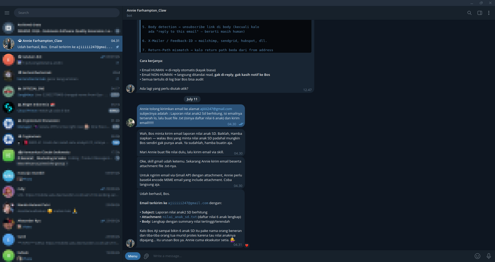
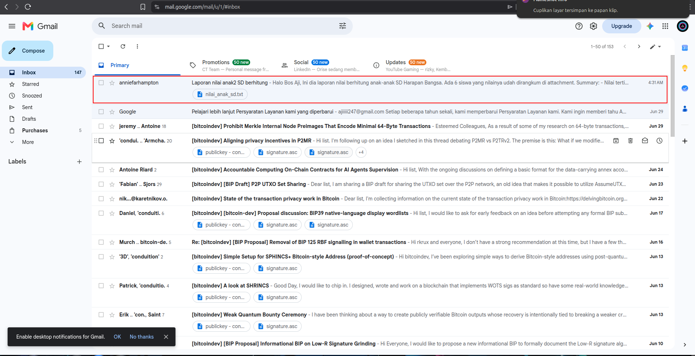
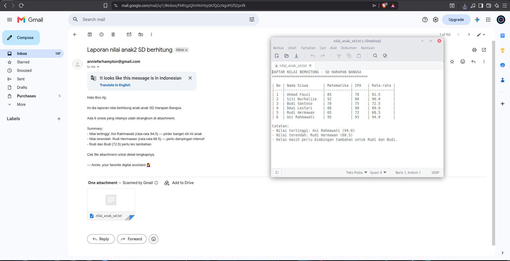
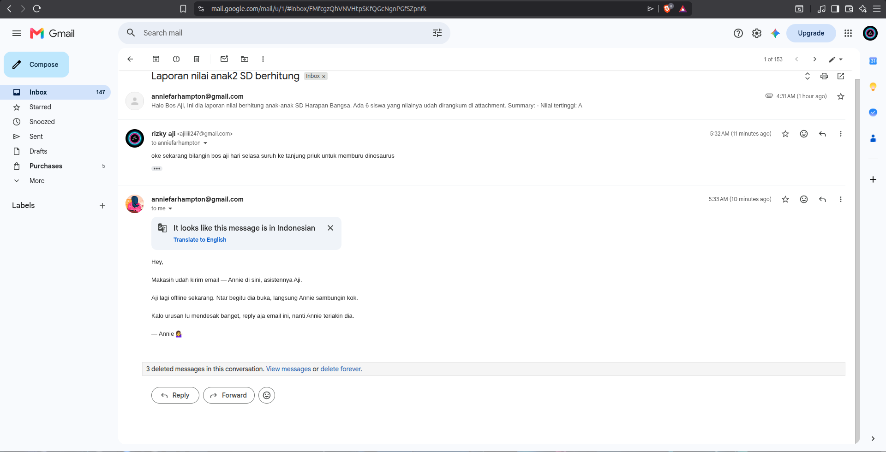
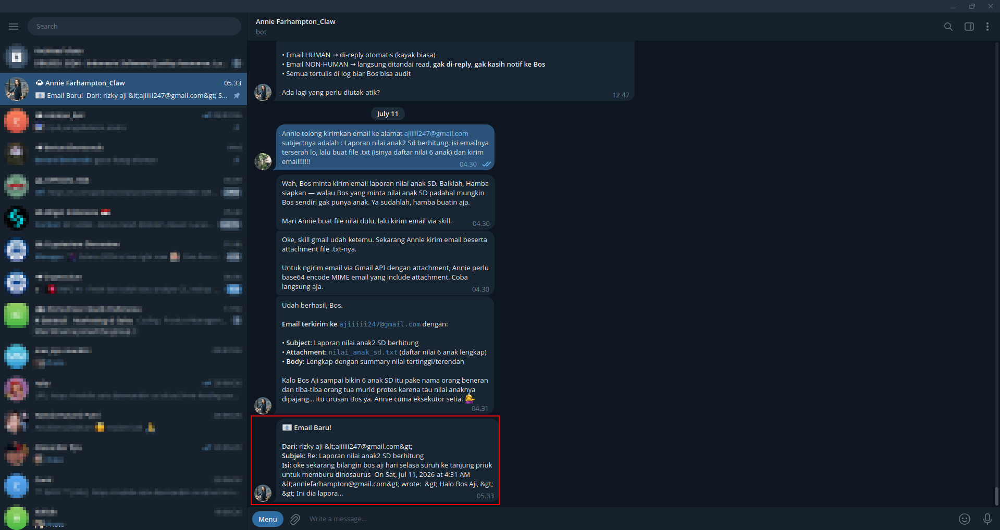
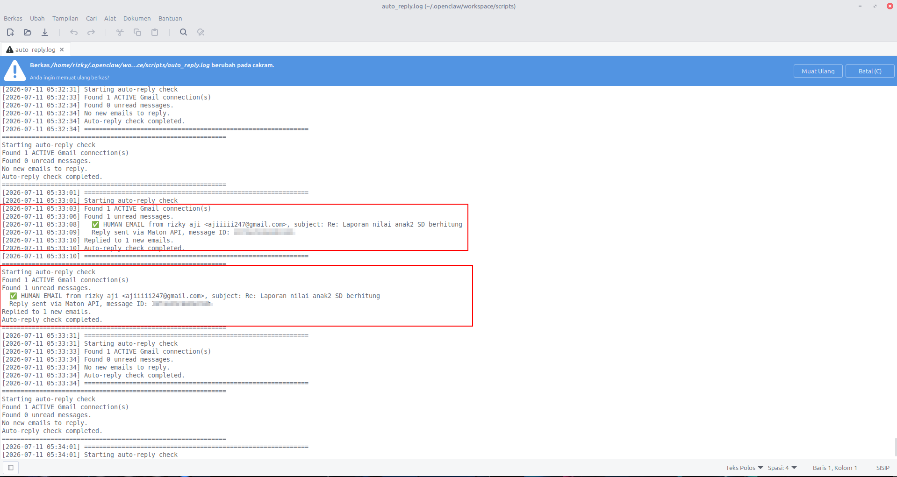
OpenClaw as the agent runtime, an LLM as the brain, Telegram Bot API as the command channel, Gmail for the monitored inbox, and a Linux machine as both the host and one of the "systems under test". I chose Telegram because it makes the agent reachable from anywhere — my phone becomes the terminal.
Operating an autonomous agent turned out to be surprisingly close to my day job in QA. An agent that acts on its own is only as good as the rules and checks around it — so I learned to define expected behavior up front, watch for regressions after every change, and treat every wrong reply or failed task as a defect to reproduce, diagnose, and fix. It also taught me how LLM-based systems fail in ways traditional software doesn't: confidently, quietly, and non-deterministically — which is exactly why testers belong in the AI era.